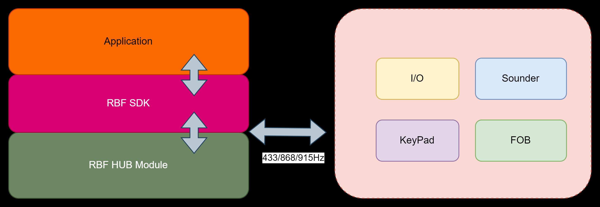

|
RBF SDK
|
This SDK is primarily used for network command interaction with the dusun RBF module, encapsulating downlink commands and parsing uplink notifications.
Contact Dusun technical support for compiling toolchains and environment to apply for the SDK. Dusun will evaluate the development environment and output RBF SDK static/dynamic link libraries for customers to carry out secondary development.
The RBF SDK implements a specialized physical network protocol for security purposes. It categorizes all security devices into I/O, sounder, keypad, and FOB categories. Each category includes multiple distinct device types. For example, I/O devices encompass most security sensors and control devices such as water leak sensors, temperature and humidity sensors, smart plugs, water valves, etc. The relationship between device categories and device types is shown in the table below：
| Device category | Device Type |
| I/0 | Magnetic |
| PIR | |
| Water leak | |
| Fixed Emergency Button | |
| Port Emergency Button | |
| Smoke | |
| Temperature and humidity sensor | |
| Smart Plug | |
| Relay | |
| Wall Switch | |
| Water Valve | |
| Sounder | Indoor Siren |
| Outdoor Sounder | |
| KeyPad | Keypad |
| KeyFob | Keyfob |
Through the RBF SDK, users can easily access and operate security alarm sub-devices, such as collecting door magnetic switch status, sending audio-visual alarm commands to sounders, arming all PIR sensors, and more. The framework of the SDK is as shown in the following diagram:

The following presents some core concepts within the RBF protocol stack, which are mentioned in interface descriptions, helping users better understand and utilize RBF SDK interfaces.
Within the RBF SDK, several threads are used for message distribution and processing. Therefore, users must first call the rbf_init() interface to initialize it and its environment when using the SDK.
In cases where software exits or there is no further need for RBF, users can deinitialize it through the rfb_delinit() interface after protocol stack initialization to reduce resource usage.
The protocol stack's underlying layer requires communication with the RBF Hub module via a physical interface (generally a serial port). Thus, the rbf_set_port() interface is used to set the physical interface. The physical interface should implement basic read and write handlers. It is recommended to set up the physical interface before initializing the protocol stack.
Users need to register appropriate event callback functions through the rbf_register_evt_callback() interface to handle events reported by RBF. The RBF SDK includes the following event callbacks:
Sub-devices need to join the RBF network for communication, a process referred to as network registration. Currently, three network registration methods are supported:
Local registration is a commonly used network setup method, mainly employed during the initial deployment of a security network for bulk addition of security sub-devices. Local registration requires the AP panel (application processing end) to send a local registration command (using the rbf_start_hub_register() interface) to notify the RBF hub and initiate local registration. Users can then operate security sub-devices to request network entry and join the RBF network.
Compared to local registration, MAC address registration offers a more precise method for individual device entry. Users need to obtain the sub-device MAC address through scanning a QR code or consulting the product manual, then inform the RBF hub (using the rbf_start_hub_register() interface) to enable MAC address registration mode for the device. Subsequently, operating security sub-devices can request network entry and join the RBF network.
Similar to MAC address registration, SN registration requires users to obtain the sub-device SN number through scanning a QR code or consulting the product manual, then inform the RBF hub (using the rbf_start_hub_register() interface) to enable SN registration mode for the device. Subsequently, operating security sub-devices can request network entry and join the RBF network.
Once the hub initiates network registration mode, it will persist in that state. The AP panel needs to actively send a command to exit network registration, informing the hub to exit the network registration mode (using the rbf_stop_hub_register() interface).
Users can query all registered sub-device information using the rbf_get_register_info() interface.
Users can delete a registered sub-device using the rbf_device_delete() interface. To delete all registered sub-devices, the rbf_device_delete_all() interface can be used.
Most RBF sub-devices feature LED indicators. These LEDs can indicate status changes in sub-devices (e.g., switching from disarmed to armed state). Through the rbf_device_led_indicate_set() interface, users can remotely set the LED indication action of sub-devices via the hub.
It is worth noting that for battery-operated devices, LED indications must be sent within the wake-up window. For example, a remote controller, when a button is pressed, will wake up the device, and the application needs to send LED indications within this window. Upon receiving the indication, the remote controller will display the corresponding indication.
The rbf_device_io_alarm_set() interface can be used for batch arming and disarming operations on I/O devices. Since I/O devices are predominantly low-power battery-operated devices, this interface also utilizes synchronous broadcasting.
The following uses PIR as an example to demonstrate the usage of batch arming and disarming of IO devices:
Assume that you have deployed two PIRs, device numbers 0 and 1. We can use the rbf_device_io_alarm_set() interface to batch arm and disarm the two devices.
After calling this SDK interface, the RBF hub will wake up the PIR device through broadcasting and inform it to enter the arming/disarming state. After the PIR device enters the arming/disarming state, it will turn on/off the event reporting of infrared motion detection.
Note: IO arming and disarming is only effective for sensitive sensors such as infrared. It is invalid for 24-hour alarm sub-devices such as smoke sensors and door magnets. Whether an alarm is required depends on the application itself.
Users can initiate a findme synchronous broadcast (using the rbf_start_findme() interface) to locate and identify sub-devices—most sub-devices will have LED light blink indications when they receive the synchronous findme signal.
After starting the findme synchronous broadcast, users can stop the findme broadcast by calling the rbf_stop_findme() interface.
Users can start a RSSI detection synchronous broadcast (using the rbf_start_rssi() interface) to enable RSSI detection. Sub-devices, upon receiving this synchronous broadcast, will increase data reporting frequency to facilitate hub RSSI calculation and signal quality assessment.
After starting the RSSI synchronous broadcast, users can stop the RSSI detection broadcast by calling the rbf_stop_rssi() interface.
The hub module's frequency band can be modified using the rbf_set_freq() interface.
The SDK provides example code running on the esp32 microcontroller, please refer:
main.c
rbftest.c
1.8.17